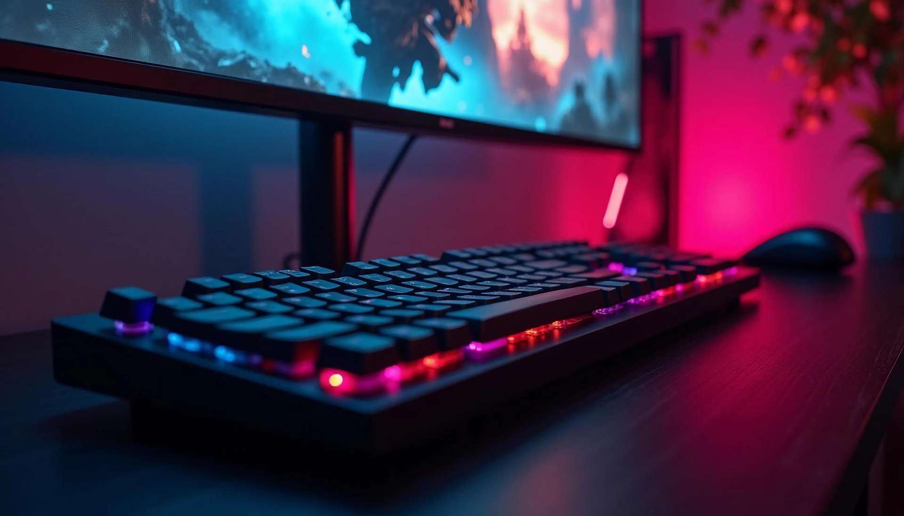

Why I Enjoy Gaming
I enjoy gaming because it gives me something fun to do after a busy day of work and school. Some games are competitive, while others are more about exploration and story. I like that there are many different types of games for different moods, it gives me some freedom of choice.
My Favorite Types of Games
I enjoy action games, adventure games, and survival horror games. Each type offers something different. Action games are exciting, adventure games have strong stories, and horror games can be fun to play with friends.
- Action games
- Adventure games
- Horror games
- Open-world games
Gaming Equipment
Good gaming equipment can make the experience all that much better. A good chair, a sweet monitor, and a reliable controller or keyboard can all help make gaming more enjoyable.

Learn more about gaming at PlayStation Official Website.